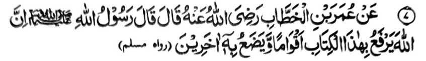
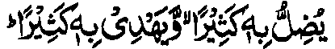
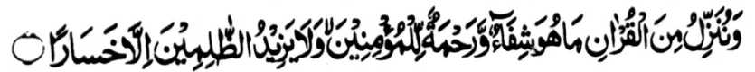
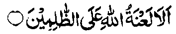
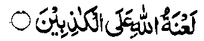

Miyakathitayan ko Umar ibn Al-Khattab (Radhiallaho ‘Anho) a pitharo iyan a pitharo o Rasulollah (Sallallaho ‘Alaihi wa Sallam), “Mata-an a so Allah na iniporo Iyan misabap sangkanan a kitab so saba-ad a manga tao ago piyakadapanas iyan misabap sangkanan a kitab so saba-ad a manga tao.”
So manga tao a piyaratiyaya iran angkanan a Soti a Kitab ago ininggolalan niran na bigan siran o Allah sa daradat a bantogan ago pada-adat, sangka-iya donya ago si-i sa Alongan a Maori, so peman so manga tao a da iran nggolalanen angkanan na piyakadapanas siran o Allah. Giyangka-iya a okit na miya-aloy pen ko madakel a Ayaat ko Qur’an. Si-i ko isa a darepa na miyabatiya-on:

“...madakel a pendadagen Niyan sa sabap saya, go madakel a pethoro-on Niyan sa sabap saya.” (Surah Al-Baqarah: 26)
Si-i pen ko salakao peman a darepa na kiyasagadan tano ron:

“Na ipethoron Nami a ped ko Qur’an so bolong go limo ko Miyamaratiyaya. Na baden pephakaoman ko manga darowaka sa kalogi.” (Surah Bani Israel: 82)
So Nabi (Sallallaho ‘Alaihi wa Sallam) na miyapanothol pen a miyatharo iyan, “Kadakelan ko manga Munafiq sangka-iya Ummat na ped ko manga Qurra, ma-ana manga pababatiya sa Qur’an.”
Si-i ko kitab a ‘Ihya-ul Ulum’ na miyapanotholon a pho-on ko manga Mashaikh, “Anda den-i kapho-on matiya o tao ko isa ko manga ‘Surah’ ko Qur’an, na so manga Mala-ikat na phonan niran den so gi-i ran non kipamangenin sa limo taman ko di niyan kagenek; ogaid na aden o to a soden so kapho-on niyan matiya na pho-on den mambo so manga Mala-ikat ko gi-i ran non kipamaninta-an taman ko kapakapos iyan matiya.”
Saba-ad ko manga Ulama na pitharo iran a aden a pekhasalak a tao a pembatiya sa Qur’an ogaid na aya miyakowa niyan non na so morka rekaniyan a di niyan mai-inengka. Lagid opama o kabatiya-a niyan sa Qur’an ko:

“...Tanodan! Ka so morka o Allah na ithom parak ko manga darowaka!!” (Surah Hud: 18)
a miyata-an niyan a ginawa niyan sangka-iya a paninta sabap ko manga dosa niyan. Sakamaoto mambo a batiya-an niyan sa Qur’an so:

“...So morka o Allah na si-i ko manga bokhag!” (Surah Ali ‘Imran: 61)
Aya mata-an na minisanggar iyan a ginawa niyan ko [kasopi-it] o tapa-os sabap ko kababaloy o ginawa niyan a bokhag.
So ‘Amir ibn-e-Wathilah (Radhiallaho ‘Anho) na pitharo iyan a so Umar (Radhiallaho ‘Anho) na biyaloy niyan so Nafe ibn-e-Abdul Harith a governor sa Makkah. Miyaka-isa na iniza-an niyan so Nafe’ o antawa-ai biyaloy niyan a komikibir ko ipangalasan. Inisembag o Nafe’ na, “So Ibn-e-Abzi.” Pitharo o Umar (Radhiallaho ‘Anho), “Antawa-a so Ibn-e-Abzi?” Inisembag iyan, “Isa sekaniyan ko manga panakawan nami.” Pitharo o Umar (Radhiallaho ‘Anho), “Inongka mbaloya so sakatao a oripen a ‘Amir?” Inisembag o Nafe, “Sabap sa pembatiya-an niyan so kitab o Allah.”
Sabap si-i na piyanothol o Umar (Radhiallaho ‘Anho) angka-iya Hadith a miyatharo o Rasulollah (Sallallaho ‘Alaihi wa Sallam) a sabap sangka-iya Kitab, na miniporo o Allah so daradat o madakel a manga tao ago miyapakadapanas iyan so saba-ad a madakel a tao.